library(readr)
R_data <- read_csv("Data/R_data2.csv")Analysis - Answers
Warning
Make sure that you try the exercises yourself first before looking at the answers
In this question we will look at the variable SAH.
What are the mean, median, variance and standard deviation of
SAH?Create a histogram and a horizontal boxplot of
SAH.Utilize the graphs and the summary statistics to describe the shape of the distribution of
SAH.Log-transform
SAH(assign it tolog_SAH).Describe the distribution of
log_SAH, based on the same techniques.
round(mean(R_data$SAH), 2)[1] 17.59round(median(R_data$SAH), 2)[1] 17.3round(var(R_data$SAH), 2)[1] 11.27round(sd(R_data$SAH), 2)[1] 3.36hist(R_data$SAH)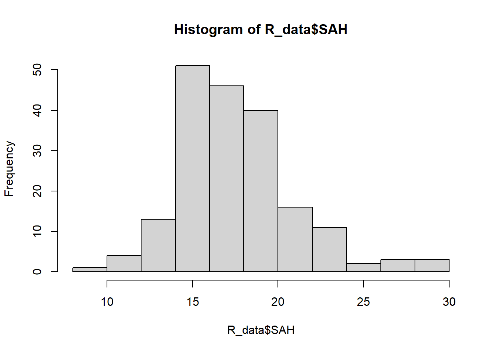
boxplot(R_data$SAH, horizontal=TRUE)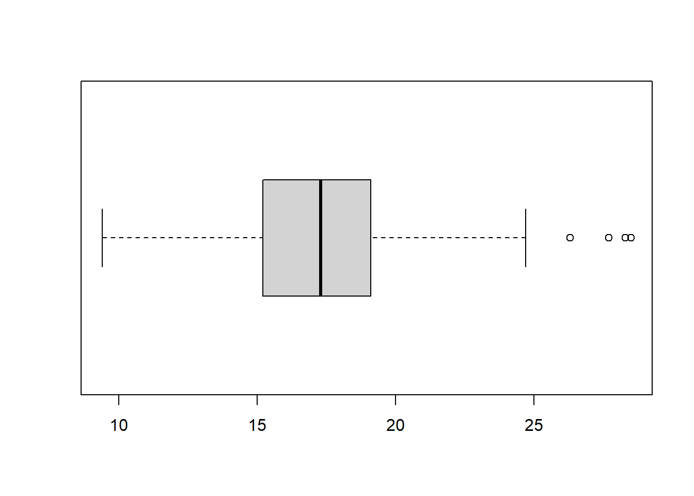
SAH has a skewed distribution.
R_data$log_SAH <- log(R_data$SAH)summary(R_data$log_SAH) Min. 1st Qu. Median Mean 3rd Qu. Max.
2.241 2.723 2.851 2.850 2.948 3.350 hist(R_data$log_SAH)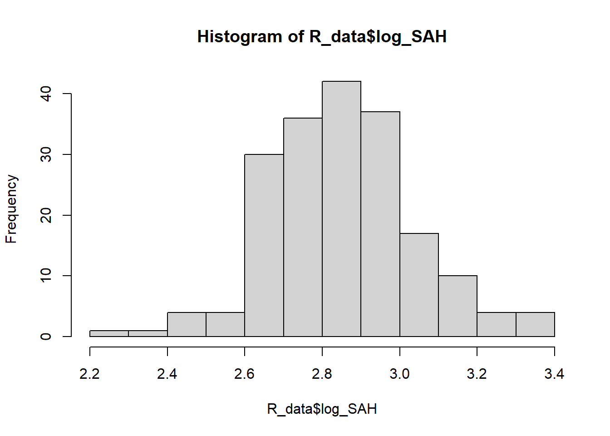
boxplot(R_data$log_SAH, horizontal=TRUE)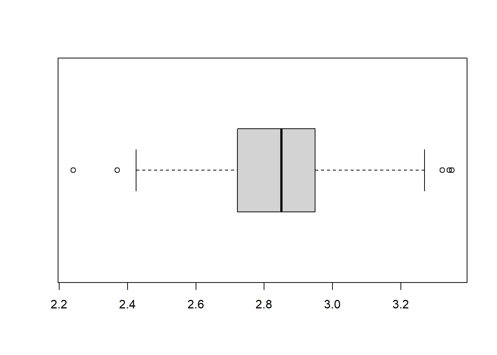
The log transformed variable looks a lot more normally distributed.
Are the values of SAH different for the two levels of Status (normal brain development or intellectual disability)? Formulate a hypothesis, test it, and make a decision about whether or not you can reject the null hypothesis. Which test did you use?
Check the distributions with plots
For normally distributed data you can use a t-test, for non-normally distributed data you can use the Wilcoxon signed rank test (also knows as the Mann-Whitney U test).
We already saw that SAH is not normally distributed.
We will use the Wilcoxon singed rank test on the untransformed data.
Hypotheses:
\(H_0: \textrm{median}_0 = \textrm{median}_1\)
\(H_a: \textrm{median}_0 \neq \textrm{median}_1\)
wilcox.test(SAH ~ Status, data = R_data)
Wilcoxon rank sum test with continuity correction
data: SAH by Status
W = 2868, p-value = 3.264e-05
alternative hypothesis: true location shift is not equal to 0The p-value <0.001. Based on a significance level of 5% there is enough evidence to reject the null hypothesis.
Note
Remember that you can save the test as an object and extract elements from it (such as the p-value)
test1 <- wilcox.test(SAH ~ Status, data = R_data)
test1$p.value[1] 3.264271e-05Make a boxplot of the SAH values of the 2 groups and calculate the median difference of SAH between the 2 groups.
Does the difference seem clinically relevant? Why or why not?
boxplot(SAH ~ Status, data = R_data)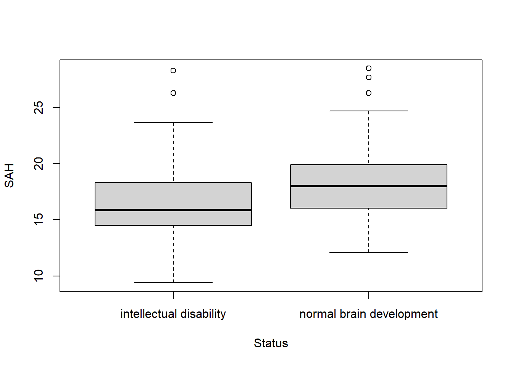
aggregate(SAH ~ Status, data = R_data, median) Status SAH
1 intellectual disability 15.85
2 normal brain development 18.00The medians and boxplots also show a clinically relevant difference.
We suspect that people who drink alcohol (alcohol is yes) might also be smokers (smoking is yes). Formulate a hypothesis, test it using the appropriate test, and make a decision about statistical significance.
use table()
Hypotheses
\(H_0: P_{alcohol} = P_{no-alcohol}\)
\(H_a: P_{alcohol} \neq P_{no-alcohol}\)
tab1 <- with(R_data, table(alcohol, smoking))
tab1 smoking
alcohol no yes
no 75 9
yes 76 30prop.table(tab1, 1) smoking
alcohol no yes
no 0.8928571 0.1071429
yes 0.7169811 0.2830189Based on the tables, we see that in the group of patients that drinks alcohol, 28% smokes vs 10% in the non-alcohol group.
To test whether this difference is statistically signficant, we use the Chi-square test.
chisq <- chisq.test(tab1)
chisq
Pearson's Chi-squared test with Yates' continuity correction
data: tab1
X-squared = 7.8407, df = 1, p-value = 0.005108The p-value is 0.005, this is significant on a 5% significance level.
In the previous practical we made a Table 1 of baseline characteristics between cases and controls (Intellectual disability and Normal brain development). Test per variable whether the groups are significantly different.
| Intellectual disability | Normal brain development | p-value | ||
|---|---|---|---|---|
| (n = 82) | (n = 108) | |||
| BMI, median [IQR] | 24 [22 - 27] | 24 [22 - 26] | ||
| missing (n = 0 ) | ||||
| Educational level | Low, n(%) | 31 (38%) | 14 (13%) | |
| Intermediate, n(%) | 34 (41%) | 48 (44%) | ||
| High, n(%) | 17 (21%) | 46 (43%) | ||
| missing (n = 0) | ||||
| Smoking | No, n(%) | 55 (67%) | 96 (89%) | |
| Yes, n(%) | 27 (33%) | 12 (11%) | ||
| missing (n = 0) | ||||
| SAM, mean (SD) | 72 (16) | 75 (18) | ||
| missing (n = 0) | ||||
| SAH, median [IQR] | 16 [15 - 18] | 18 [16 - 20] | ||
| missing (n = 0) | ||||
| Vitamin B12, median [IQR] | 378 [310 - 477] | 363 [305 - 449] | ||
| missing (n = 1) |
First decide which test to use based on the distribution of the variable
wilcox.test(BMI ~ Status, data = R_data)$p.value
chisq.test(R_data$educational_level, R_data$Status)$p.value
chisq.test(R_data$smoking, R_data$Status)$p.value
t.test(SAM ~ Status, data = R_data)$p.value
wilcox.test(SAH ~ Status, data = R_data)$p.value
wilcox.test(vitaminB12 ~ Status, data = R_data)$p.value | Intellectual disability | Normal brain development | p-value | ||
|---|---|---|---|---|
| (n = 82) | (n = 108) | |||
| BMI, median [IQR] | 24 [22 - 27] | 24 [22 - 26] | 0.175 | |
| missing (n = 0 ) | ||||
| Educational level | Low, n(%) | 31 (38%) | 14 (13%) | <0.001 |
| Intermediate, n(%) | 34 (41%) | 48 (44%) | ||
| High, n(%) | 17 (21%) | 46 (43%) | ||
| missing (n = 0) | ||||
| Smoking | No, n(%) | 55 (67%) | 96 (89%) | <0.001 |
| Yes, n(%) | 27 (33%) | 12 (11%) | ||
| missing (n = 0) | ||||
| SAM, mean (SD) | 72 (16) | 75 (18) | 0.267 | |
| missing (n = 0) | ||||
| SAH, median [IQR] | 16 [15 - 18] | 18 [16 - 20] | <0.001 | |
| missing (n = 0) | ||||
| Vitamin B12, median [IQR] | 378 [310 - 477] | 363 [305 - 449] | 0.348 | |
| missing (n = 1) |
For this question we will look at the correlation between vitaminB12 and homocysteine.
Plot a histogram of each variable to decide whether the Pearson correlation is appropriate to use. Is it?
Make a scatterplot of
vitaminB12andhomocysteine. What correlation do you see in the the graph (postive, negative, none)?What is the correlation between
vitaminB12andhomocysteine? Formulate a hypothesis, do a test, and make a decision as to whether either the Pearson or Spearman correlation is statistically significant.
hist(R_data$homocysteine)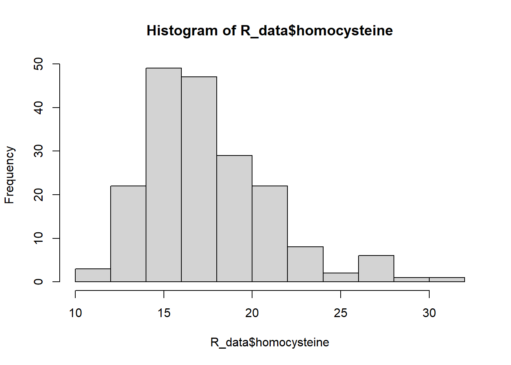
hist(R_data$vitaminB12)
Both variables look skewed, so the Spearman correlation coefficient is more appropriate.
plot(R_data$homocysteine, R_data$vitaminB12)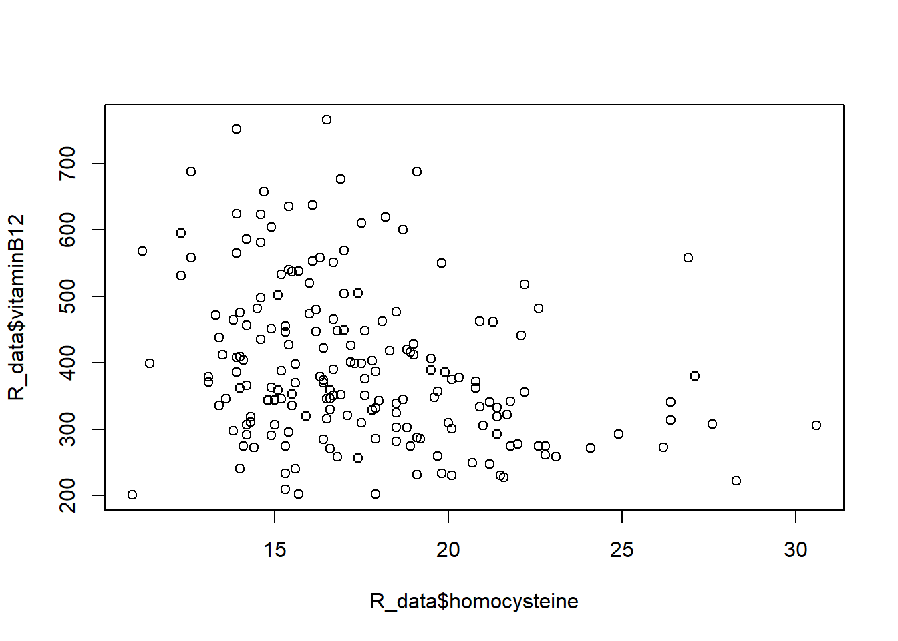
We see a slight negative correlation.
Note
This code will give the same result :
plot(vitaminB12 ~ homocysteine, data = R_data)Hypotheses
\(H_0: \textrm{cor}_{\textrm{vit, hc}} = 0\)
\(H_a: \textrm{cor}_{\textrm{vit, hc}} \neq 0\)
cor.test(R_data$homocysteine, R_data$vitaminB12, method = "spearman")Warning in cor.test.default(R_data$homocysteine, R_data$vitaminB12, method =
"spearman"): Cannot compute exact p-value with ties
Spearman's rank correlation rho
data: R_data$homocysteine and R_data$vitaminB12
S = 1511019, p-value = 5.962e-06
alternative hypothesis: true rho is not equal to 0
sample estimates:
rho
-0.3218201 The correlation coefficient is -0.322 and is highly significant (p-value < 0.001).
Important
We often find correlations interesting when they are > 0.5 (or < -0.5). Therefore, testing for significance is not very relevant here.
Let’s see what happens when we categorize a continuous variable.
Cut
vitaminB12into 4 groups, where the breaks are the 5 quantile points ofvitaminB12Make sure you include the lowest breakpoint by specifyingincl=TRUE. Assign the output tocatB12. What are the levels of this new variable?Using the log-transformed variable of
homocysteine, asses howlog_hcandcatB12relate. Make a boxplot oflog_hcfor the levels ofcatB12.Are the means of
log_-homocysteine_hcequal across all levels ofcatB12? Formulate a hypothesis, test it, and make a decision for statistical significance.
Use the function cut() for this. Running ?cut() will give you more information on the function.
Test this with an ANOVA test.
R_data$catB12 <- cut(R_data$vitaminB12, breaks = quantile(R_data$vitaminB12), incl=TRUE)
levels(R_data$catB12)[1] "[201,307]" "(307,370]" "(370,463]" "(463,766]"R_data$log_hc <- log(R_data$homocysteine)
boxplot(R_data$log_hc ~ R_data$catB12)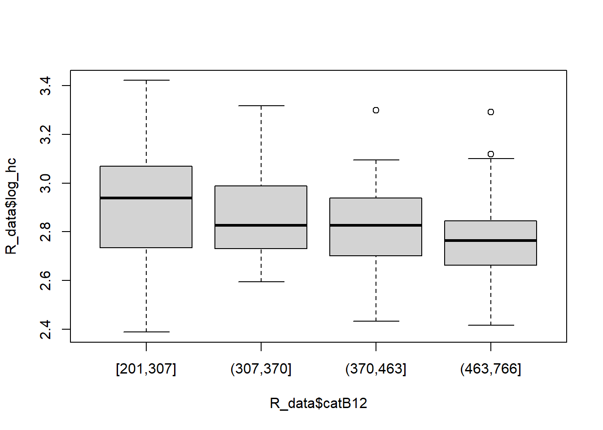
There appears to be a trend: the higher levels of catB12 correspond to lower levels of log-transformed homocysteine.
Hypotheses
\(H_0: \mu_1 = \mu_2 = \mu_3 = \mu_4\)
\(H_a: \textrm{not all means are equal}\)
ANOVA1 <- aov(R_data$log_hc ~ R_data$catB12)
summary(ANOVA1) Df Sum Sq Mean Sq F value Pr(>F)
R_data$catB12 3 0.626 0.20880 6.286 0.000438 ***
Residuals 186 6.179 0.03322
---
Signif. codes: 0 '***' 0.001 '**' 0.01 '*' 0.05 '.' 0.1 ' ' 1The p-value is < 0.05, so we conclude that there is a statistically significant difference between the mean log-homocysteine of at least one of the groups and the others.
Repeat questions 6b and 6c, without transforming homocysteine.
Which statistical test is appropriate in this case?
boxplot(R_data$homocysteine ~ R_data$catB12)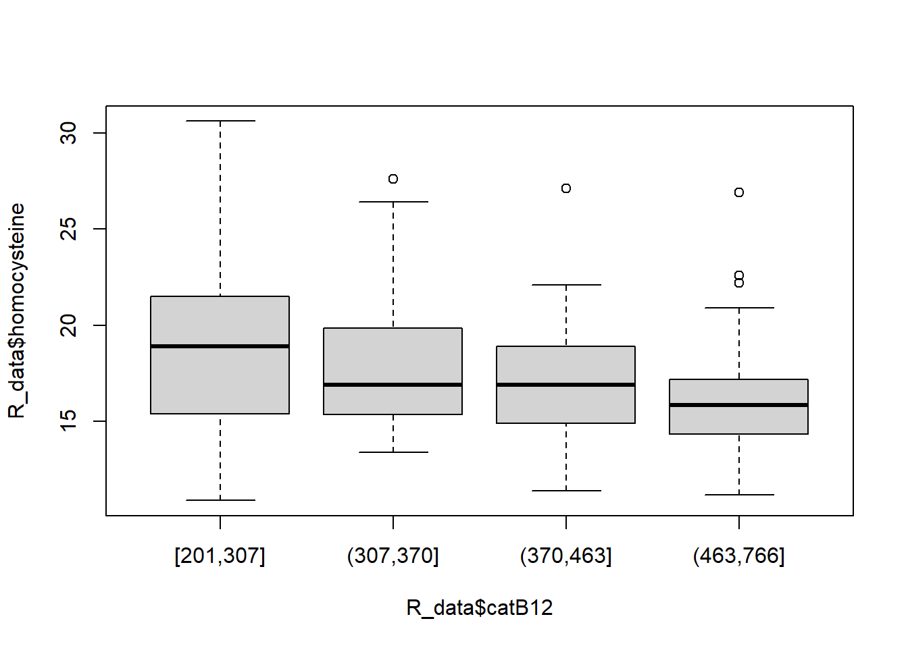
Hypotheses
\(H_0: \textrm{No difference in the distributions}\)
\(H_a: \textrm{A difference in the distributions}\)
KW.1 <- kruskal.test(R_data$homocysteine ~ R_data$catB12)
KW.1
Kruskal-Wallis rank sum test
data: R_data$homocysteine by R_data$catB12
Kruskal-Wallis chi-squared = 16.928, df = 3, p-value = 0.0007311The Kruskal-Wallis test is also highly significant.
We previously saw that there was an association between vitaminB12 and homocysteine. We will now quantify the magnitude of this relationship and see if we can explain the variabiliy of homocysteine with values of vitaminB12.
We will estimate a regression model with
homocysteineas the dependent variable andvitaminB12as the independent variable. Write down the equation for the regression model.Estimate the regression model and evaluate the residuals. Are the assumptions of the model met?
The residuals look a bit skewed. We saw earlier that our dependent variable follows a skewed distribution. The residuals might look better using the transformed version of the variable (
log_hc). Re-estimate the model with this variable and evaluate the residuals again. Are you now satisfied?Assuming the assumptions hold (even if they don’t), we’ll make inference on the slope. Is
vitaminB12statistically significant in the model? What percent variability does it explain inlog_hc?What is the predicted
log_hclevel for a person withvitaminB12equal to 650? What is this value when unlogged (exponentiated)?
Look at the normality of the residuals and the homoskedasticity
Use the predict() function
\(\textrm{homocysteine}_i = \beta_0 + \beta_1*\textrm{vitaminB12}_i + \varepsilon_i\)
LM1 <- lm(homocysteine ~ vitaminB12, data = R_data)
plot(LM1)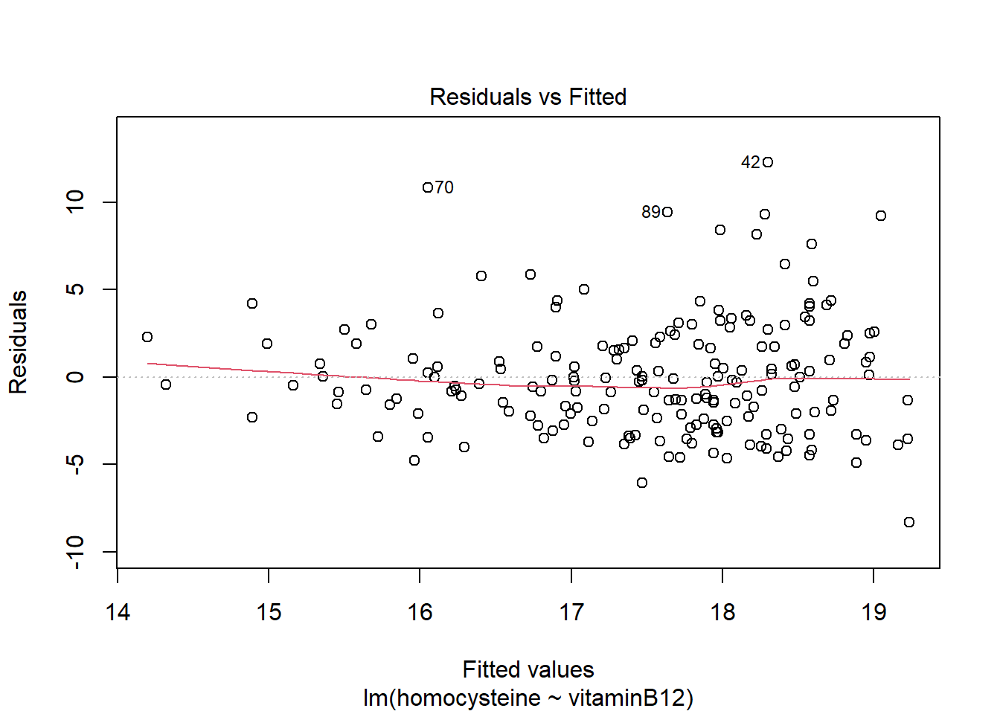
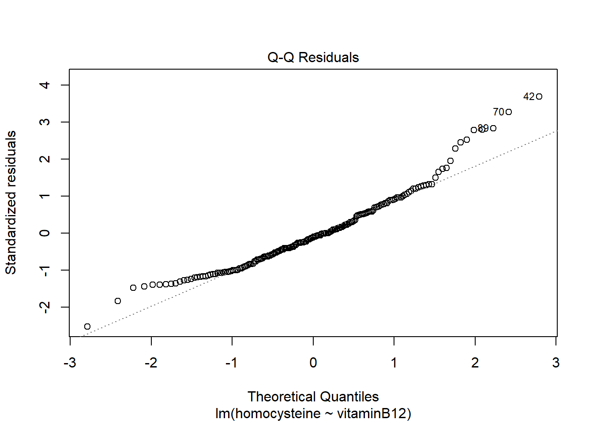
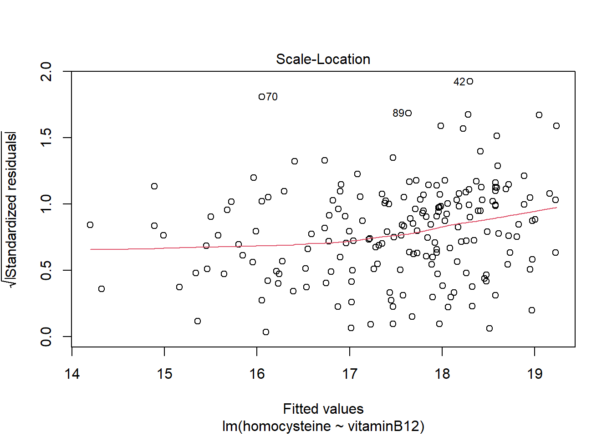
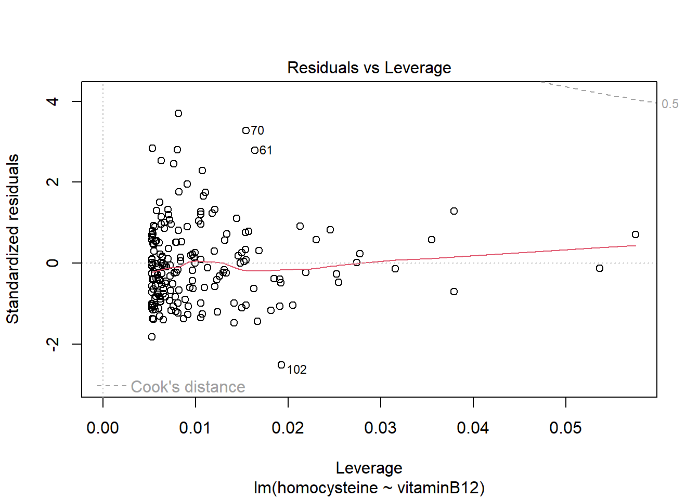
hist(LM1$residuals)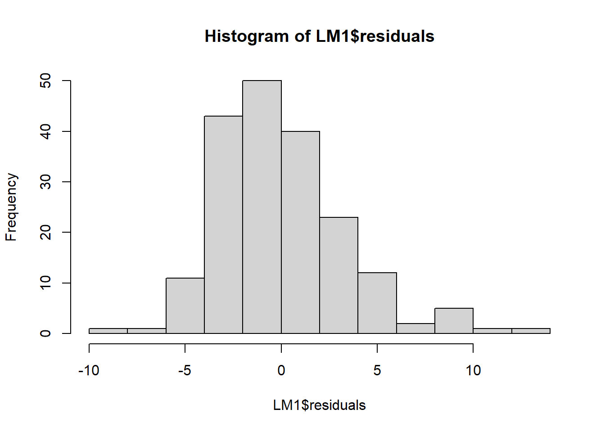
It seems the residuals do not follow a normal distribution, so this assumption does not hold
LM2 <- lm(log_hc ~ vitaminB12, data = R_data)
plot(LM2)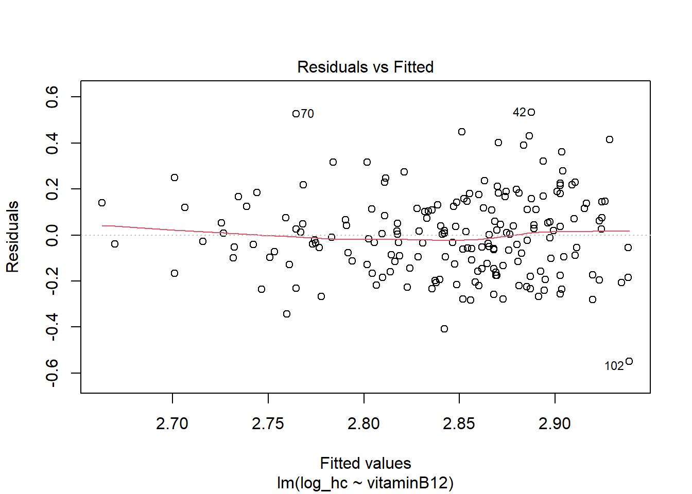
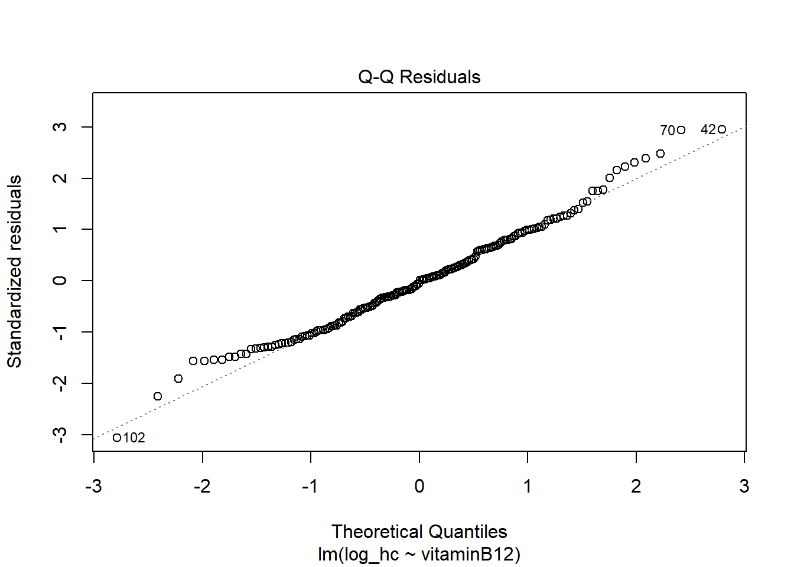
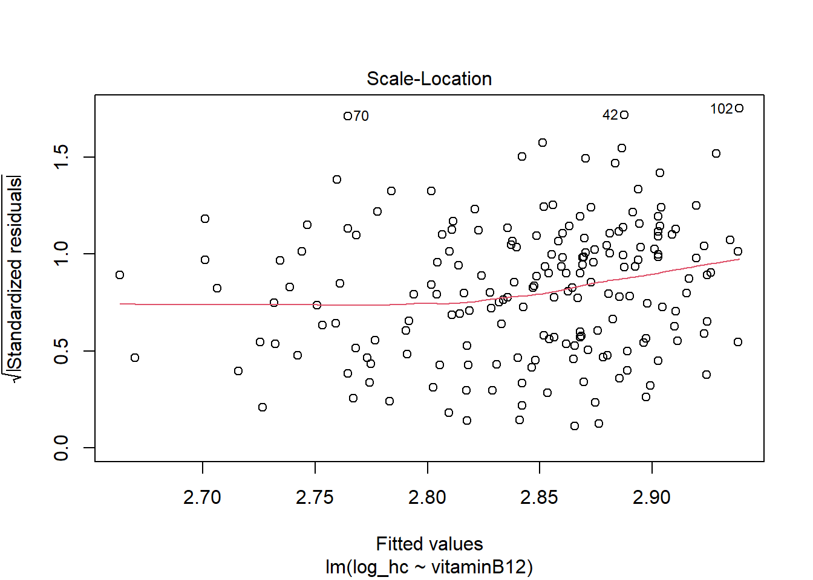
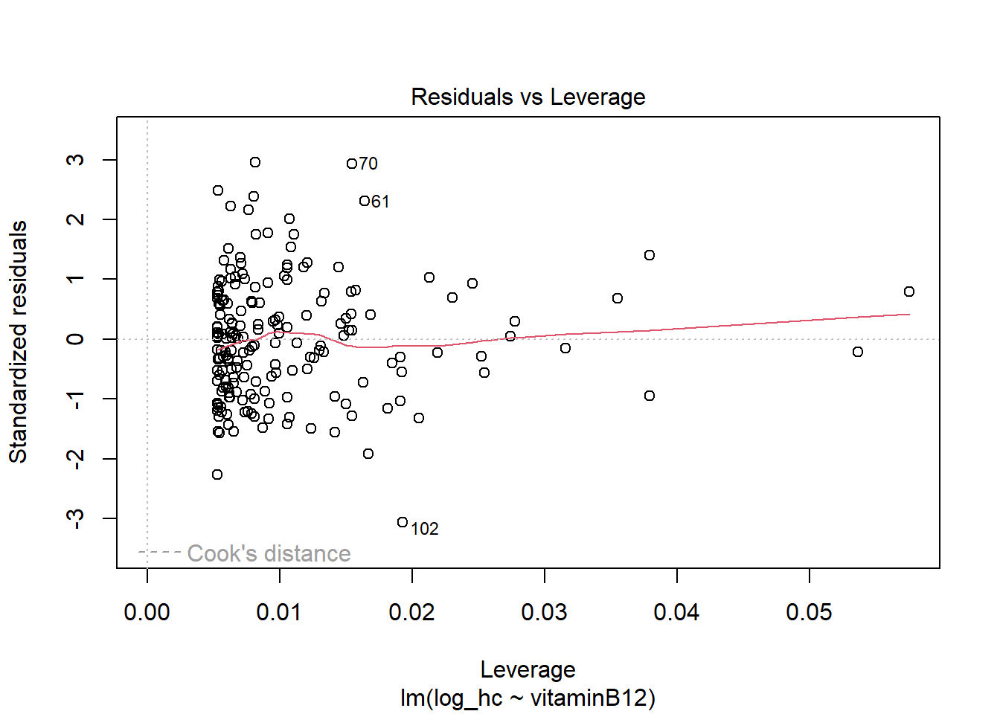
hist(LM2$residuals)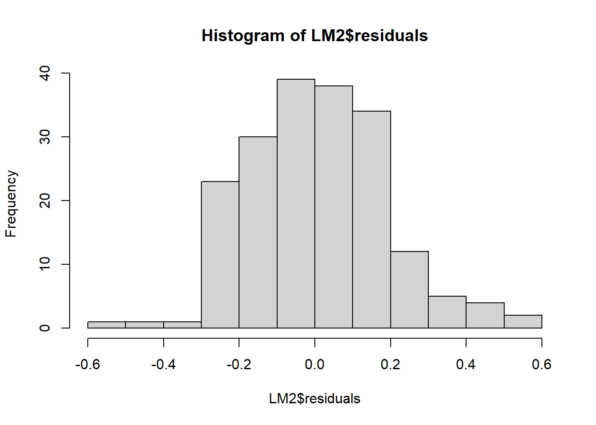
The residuals now look more symmetrical. We are satisfied with these residuals.
summary(LM2)
Call:
lm(formula = log_hc ~ vitaminB12, data = R_data)
Residuals:
Min 1Q Median 3Q Max
-0.5501 -0.1288 -0.0041 0.1176 0.5334
Coefficients:
Estimate Std. Error t value Pr(>|t|)
(Intercept) 3.0369329 0.0457556 66.373 < 2e-16 ***
vitaminB12 -0.0004881 0.0001113 -4.386 1.92e-05 ***
---
Signif. codes: 0 '***' 0.001 '**' 0.01 '*' 0.05 '.' 0.1 ' ' 1
Residual standard error: 0.1812 on 188 degrees of freedom
Multiple R-squared: 0.09281, Adjusted R-squared: 0.08799
F-statistic: 19.23 on 1 and 188 DF, p-value: 1.923e-05The value of the slope for vitaminB12 is statistically significant. So per point increase in vitaminB12, the mean log_hc decreases with 0.0004881.
The R-squared is 0.093, meaning that roughly 9% of the variations in log_hc are explained by vitaminB12.
Patient1 <- predict(LM2, newdata = data.frame(vitaminB12 = 650))
Patient1 1
2.719635 exp(Patient1) 1
15.17479 The predicted homocysteine value for a patient with a vitaminB12 value of 650 is 15.2.
Note
You can also calculate this manually:
\(\beta_0 + \beta_1*650 = 3.037 - 0.0005*650 =\) 2.712
Now let’s consider a framework where we want to use more than one predictor. We want to build a regression model for SAM using vitaminB12, cholesterol, homocysteine and folicacid_erys (folic acid red blood cells).
Run this multiple regression model in R. Check the assumptions. Do the assumptions hold?
Assuming the assumptions hold (even if they don’t), we’ll make inference on the covariates. Are any of the variables statistically significant in the model? What percent variability do the variables explain in SAM?
What is the predicted SAM level for a person with the following:
vitaminB12 = 650
cholesterol = 17
homocysteine = 16
folicacid erys = 1340
LM3 <- lm(SAM ~ vitaminB12 + cholesterol + homocysteine + folicacid_erys, data = R_data)
plot(LM3)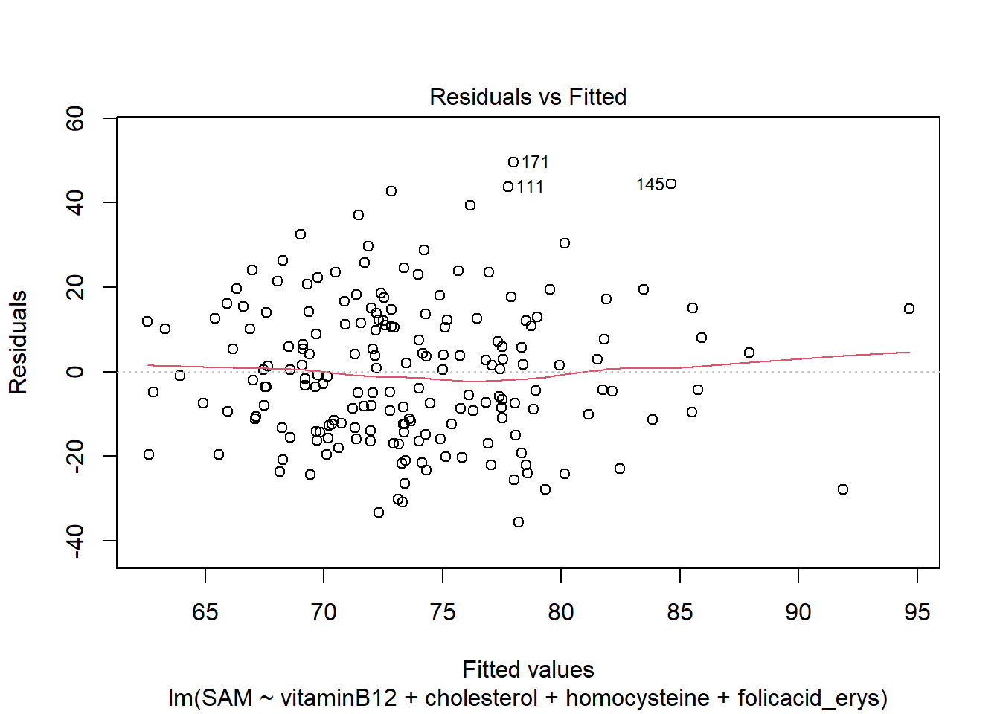
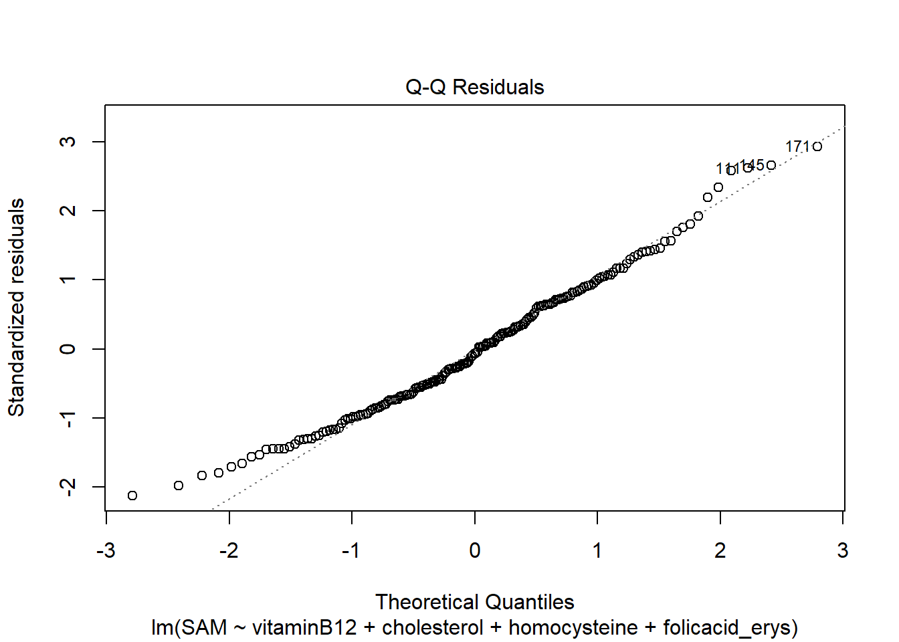
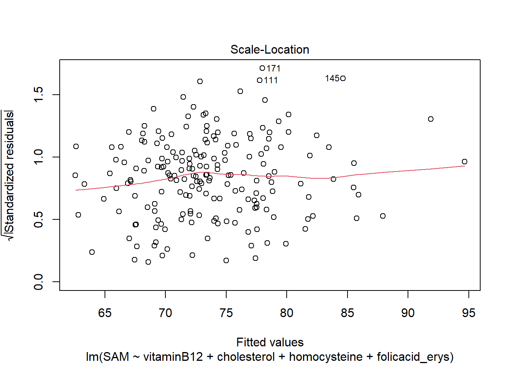

hist(LM3$residuals)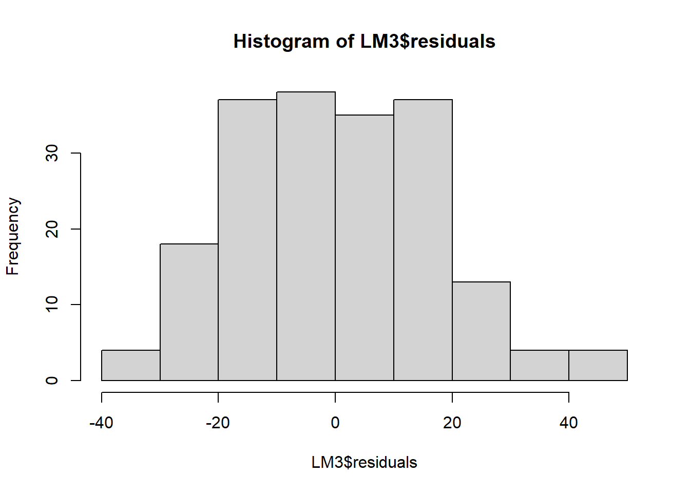
The residuals look good, meaning that the asumptions hold.
summary(LM3)
Call:
lm(formula = SAM ~ vitaminB12 + cholesterol + homocysteine +
folicacid_erys, data = R_data)
Residuals:
Min 1Q Median 3Q Max
-35.704 -12.367 -1.047 11.972 49.505
Coefficients:
Estimate Std. Error t value Pr(>|t|)
(Intercept) 1.800739 27.877405 0.065 0.948566
vitaminB12 -0.002684 0.011286 -0.238 0.812288
cholesterol 4.583482 1.369695 3.346 0.000992 ***
homocysteine -0.645535 0.413510 -1.561 0.120206
folicacid_erys 0.005033 0.006812 0.739 0.460939
---
Signif. codes: 0 '***' 0.001 '**' 0.01 '*' 0.05 '.' 0.1 ' ' 1
Residual standard error: 16.94 on 185 degrees of freedom
Multiple R-squared: 0.09232, Adjusted R-squared: 0.0727
F-statistic: 4.704 on 4 and 185 DF, p-value: 0.001225Cholesterol is the only significant variable (p-value < 0.05). The R squared is 0.092. So this model explains 9% of variability in SAM.
Note
The adjusted R-squared is 0.0727. This measure gives a penalty for including more covariates in the model and can be used when comparing different models.
Patient2 <- predict(LM3, newdata = data.frame(vitaminB12 = 650,
cholesterol = 17,
homocysteine = 16,
folicacid_erys = 1340))
Patient2 1
74.39131 We would like to know if smoking and vitaminB12 can be used to predict Status.
What type of model would you use for this?
Statusandsmokingshould be factors for this analysis. Check if this is the case, otherwise use the following code to make factors of these variables:
R_data$Status <- as.factor(R_data$Status)
R_data$smoking <- as.factor(R_data$smoking)If we run the model on the data as it is now, R will consider “normal brain development†as the event because it is second in the levels of Status:
levels(R_data$Status)So we need to first change these factor levels so we treat “intellectual disability†as the event and “normal brain development†as the baseline. Run the following to change the levels
R_data$StatusNew <- factor(R_data$Status,
levels = c("normal brain development", "intellectual disability"))
levels(R_data$StatusNew)Run a logistic regression model in R with
StatusNewas the outcome andsmokingandvitaminB12as the predictors. Can either variable significantly predict mental retardation?What is the probability of having a baby with an intellectual disability given the mother smokes and has a vitaminB12 level of 400? What is the probability of having a baby with an intellectual disability given the mother smokes and has a vitaminB12 level of 650?
A logistic regression model
str(R_data)'data.frame': 190 obs. of 24 variables:
$ patientnumber : num 1 2 3 4 5 6 7 8 9 10 ...
$ Status : Factor w/ 2 levels "intellectual disability",..: 1 2 1 2 1 1 1 1 1 1 ...
$ iodine_deficiency : chr "no" "no" "no" "yes" ...
$ BMI : num 32 23 29 22 22 24 24 28 33 32 ...
$ educational_level : chr "intermediate" "intermediate" "low" "low" ...
$ alcohol : chr "no" "yes" "no" "no" ...
$ smoking : Factor w/ 2 levels "no","yes": 1 2 1 1 1 1 1 1 2 1 ...
$ medication : chr "no" "no" "no" "no" ...
$ birthweight : num 2618 3541 2619 3810 4136 ...
$ pregnancy_length_weeks: num 38 40 38 40 42 41 40 37 42 39 ...
$ pregnancy_length_days : num 4 2 3 5 3 1 4 1 0 2 ...
$ SAM : num 54.5 84 61 43 83 69 79 71.5 56 42.5 ...
$ SAH : num 14.8 23.6 18.7 23.2 17.1 19.6 22.4 18 20 23.4 ...
$ homocysteine : num 18.8 15.6 15.2 16.5 19.5 17.5 14.9 22.2 19.1 16 ...
$ cholesterol : num 16.5 17.5 16.4 16.4 16.9 15.9 16.9 16 18.6 16.7 ...
$ HDL : num 26.1 26.7 26.2 25.9 26.7 ...
$ triglycerides : num 8.84 7.78 7.54 8.95 7.57 7.35 7.63 7.38 8.25 8.27 ...
$ vitaminB12 : num 303 370 533 346 389 611 604 518 288 520 ...
$ folicacid_serum : num 26.4 37.8 33.7 35.1 29 28.3 33.8 31.1 27.7 33.4 ...
$ folicacid_erys : num 1132 1467 1528 1539 1178 ...
$ log_SAH : num 2.69 3.16 2.93 3.14 2.84 ...
$ catB12 : Factor w/ 4 levels "[201,307]","(307,370]",..: 1 2 4 2 3 4 4 4 1 4 ...
$ log_hc : num 2.93 2.75 2.72 2.8 2.97 ...
$ StatusNew : Factor w/ 2 levels "normal brain development",..: 2 1 2 1 2 2 2 2 2 2 ...GLM1 <- glm(StatusNew ~ smoking + vitaminB12,
family = binomial(logit), data = R_data)
summary(GLM1)
Call:
glm(formula = StatusNew ~ smoking + vitaminB12, family = binomial(logit),
data = R_data)
Coefficients:
Estimate Std. Error z value Pr(>|z|)
(Intercept) -1.397552 0.555095 -2.518 0.011813 *
smokingyes 1.435938 0.391342 3.669 0.000243 ***
vitaminB12 0.002088 0.001301 1.604 0.108610
---
Signif. codes: 0 '***' 0.001 '**' 0.01 '*' 0.05 '.' 0.1 ' ' 1
(Dispersion parameter for binomial family taken to be 1)
Null deviance: 259.83 on 189 degrees of freedom
Residual deviance: 243.59 on 187 degrees of freedom
AIC: 249.59
Number of Fisher Scoring iterations: 4Smoking is a significant predictor, but vitaminB12 is not.
To obtain ORs and their corresponding 95% CI, we might use:
exp(coef(GLM1))(Intercept) smokingyes vitaminB12
0.2472015 4.2035866 1.0020900 exp(confint(GLM1))Waiting for profiling to be done... 2.5 % 97.5 %
(Intercept) 0.08107013 0.7206897
smokingyes 1.99336189 9.3392849
vitaminB12 0.99955623 1.0046944mynew <- data.frame(smoking = factor(c("yes", "yes")), vitaminB12 = c(400, 650))
predict(GLM1, newdata = mynew, type = "response") 1 2
0.7054726 0.8014592 The probabilities are 71% and 80% for these two patients.